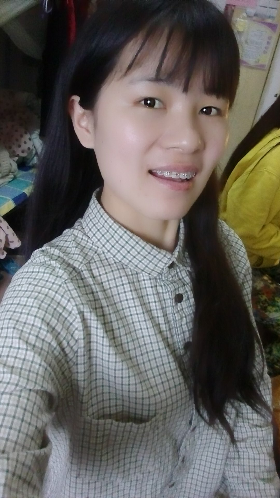

正文: 更新最近的进展啦之前门牙太挤，导致一颗磨损，另一颗正常，所以拍照是这个样子牙套脸还是很严重侧脸嘴型是不是自然了很多
以下是原答案
更新一下刚戴牙套的样子
智齿长出来把上牙门牙挤歪了，下牙也有两颗被挤歪了（翻了手机相册半天居然没留照），上门牙两个多月就排齐了
以下是原答案
体验就是“种一棵树最好的时间有两个，一个是十年前，一个是今天”这句话真对！！
从审美意识萌芽之初，我就对自己的牙齿不满意，想矫正但一直犹豫不决瞻前顾后，怕牙齿提早松动，怕还没老就掉牙（父母朋友都这么告诉我的），怕拔牙变笨伤神经，怕脸型变丑，怕整牙失败……总之就是各种怕，你们担心的问题我都担心过！结果就是一次次错过最佳时期，一直拖到了25岁读研了意识到此时不整就真没时间每月复诊了，这才下定决心去医院咨询，咨询完医生得知至少需要戴两年牙套，我又打退堂鼓了，两年不能啃苹果啃排骨啃甘蔗，坚持两年吃完东西就刷牙，一天刷四五次……简直不能忍！
但是一旦动了这个心思，不整我怕是忘不掉了，我天天照镜子嫌弃自己不整齐的牙齿，终于在某个上午自习中途丢下书跑医院拍了片子取了牙模。到现在还有五天就满一年了，没有一天后悔过，25岁都是成年人了，应该学会自己做决定，并为自己的决定负责了。
如果一件事情你犹豫不决瞻前顾后纠结不堪，可能有两个原因，一个是因为穷，一个因为怂。穷就不说了，有钱能使做选择变得容易很多这是真理，怂就是你既豁不出去，又放不下，不敢做决定，不想承担后果。整牙肯定有风险，但你选择靠谱的医院，认真遵医嘱，了解自己的身体以及牙齿情况，风险在一定程度上可以规避的。
看别人答案看再多，论坛逛再多，case看再多，最终做决定还是要看自己，整牙不算个小事了，关乎身体健康、未来发展、人生方向等等的决定，亲人朋友们都不太敢为我做决定的，所以最后做决定的还是自己。
后来我碰到其他决定：好想转行啊开始学新领域会不会太晚？学舞蹈会不会太晚？等等诸多“会不会太晚”的问题，我都立即就去做了，不然五年后我还是会问会不会太晚，因为我知道我是那种“不尝试就忘不掉的人”。Just do it！
下面是我戴牙套前后对比图以及脸型变化，写在这里留作纪念吼吼吼～～～
这是牙套之前的大脸，其实只有九十斤但看起来就像一百二啊哭！
我的牙齿问题是拥挤，并不是龅牙，所以嘴不凸，也因为这样身边的朋友们都劝我别整算了好像不影响形象，可我自己看着不爽啊！其实我是真想瘦脸来着～
然后脸真的瘦了哈哈哈哈……眼睛也变大了有没有，虽然单眼皮肿眼泡很丑摔！！

钢牙有点丑所以不太敢露@_@
这时候是戴牙套半年多了
逗逼练功照……哈哈哈哈
我担心的“牙套脸”还是出现了，我变得尖嘴猴腮了，颧骨变高，两腮下陷。
躺医院打种植钉，都快吓哭了，拔了四颗牙，钉了三个钉子，感觉自己也是经历过大风大浪的人了≥﹏≤
Cos乔峰啦……脸对比第一张小了好多圈有没有～
这就是今天啦，过完年26岁了，可我有一颗16岁的心啊，双马尾扎起来！
还有五天牙套就整整戴一年了，当初还纠结两年时间太长，其实两年太快了，感觉时间都不是按天过，今天周六，一转眼又周六了……过了24岁我就感觉时间何止如流水，简直如快放版瀑布！
所以想做什么赶紧做吧，你忘不掉的！